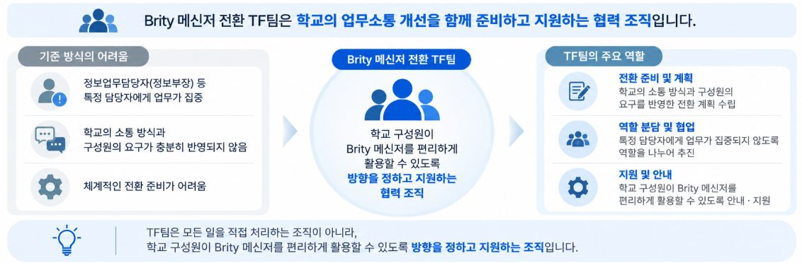
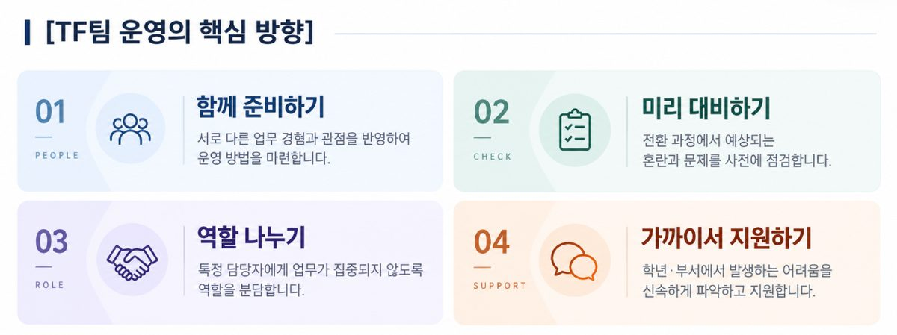
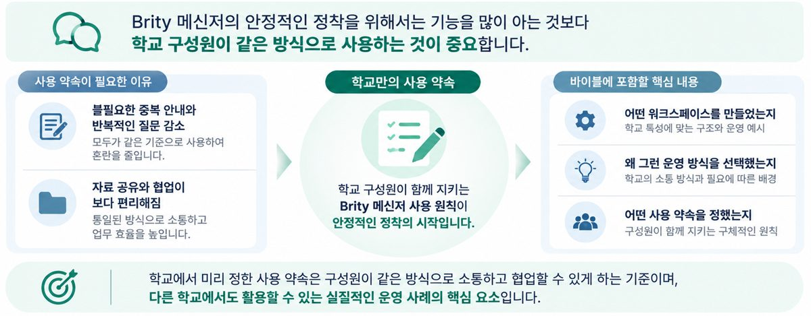
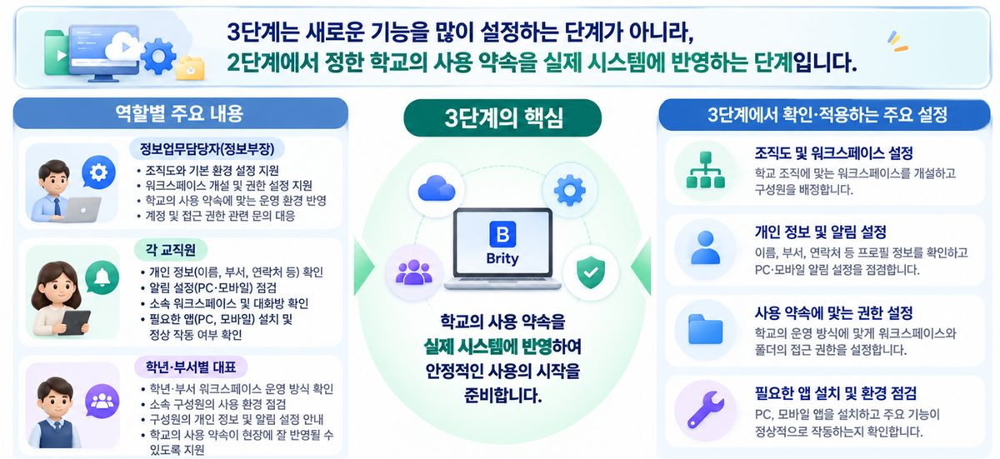
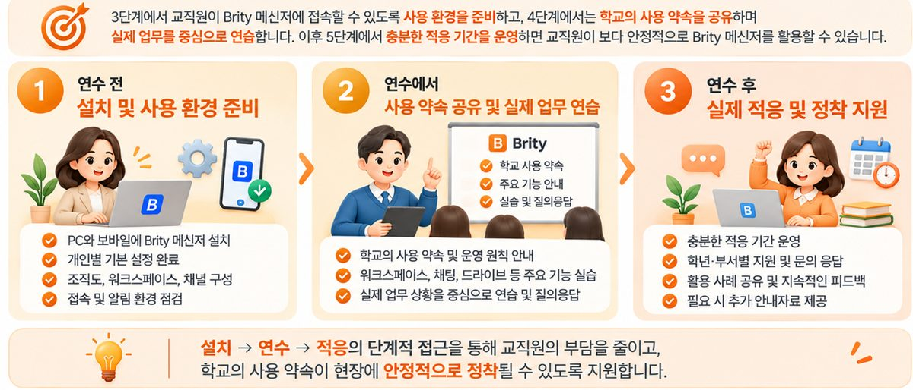
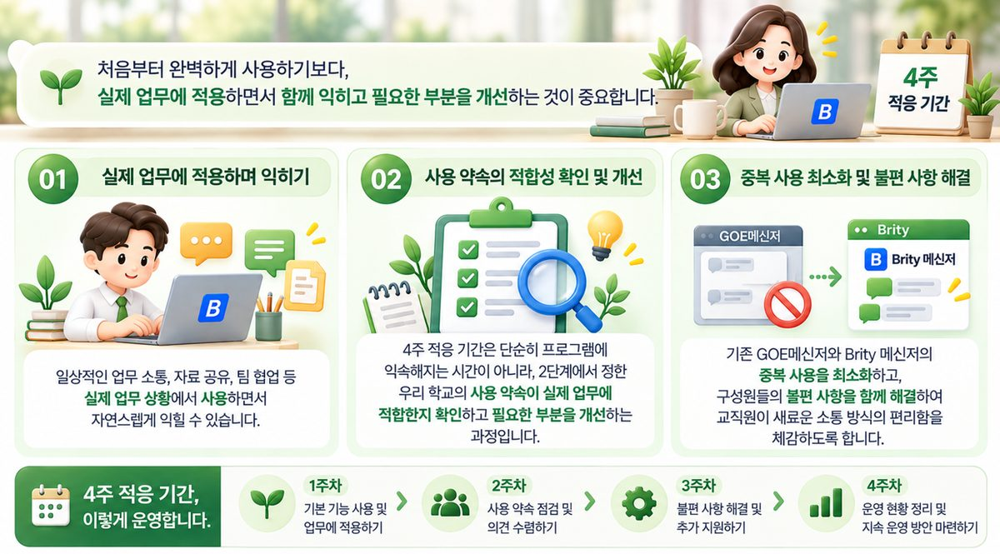

Brity 메신저 정착,
이렇게 시작하세요.
기능을 많이 아는 것보다 학교 구성원이 같은 방식으로 사용하는 것이 중요합니다.
학교 맞춤형 5단계 실천 가이드. 단계별 체크리스트와 바로 쓰는 공지 템플릿을 담았습니다.
- TF팀
- 사용 약속
- 환경 준비
- 실습 연수
- 4주 적응
우리 학교는 지금 어디쯤인가요?
상황을 고르면 지금 필요한 단계로 바로 이동합니다.
메신저를 바꾸는 일이 아니라, 소통 방식을 함께 정하는 일입니다
경기도교육청의 AI·디지털 기반 업무협업 환경(G-ONE)이 확대되면서 학교의 업무소통이 GOE 메신저에서 Brity 메신저 중심으로 바뀌고 있습니다. 그러나 새 시스템 도입이 곧바로 업무 효율로 이어지지는 않습니다. 충분한 준비 없이 전환하면 아래와 같은 일이 생깁니다.
같은 공지가 여러 곳에
워크스페이스, 대화방, GOE 메신저에 동일한 공지가 반복 게시되어 교직원이 모든 곳을 확인해야 합니다.
질문과 답변이 흩어짐
공지에 대한 질문이 개별 메시지로 오면 담당자는 같은 답을 여러 번 하고, 다른 교직원은 답을 볼 수 없습니다.
여전히 파일로 제출·취합
함께 작성할 수 있는 자료를 개별 파일로 제출받아 취합하면 반복 업무가 그대로 남습니다.
한 사람에게 쏠리는 지원
설치와 사용 문의가 정보업무담당자(정보부장) 등 특정 교직원에게 집중됩니다.
그래서 이 길라잡이는 ① 구성원이 함께 참여하는 전환 지원 체계(TF팀), ② 학교 차원의 공통 소통 기준(사용 약속), ③ 부담을 줄이는 단계적 정착(환경 준비·실습 연수·4주 적응), ④ 바로 쓰는 실천 자료(체크리스트·연수 운영안·적용 예시)를 제안합니다. 모든 내용은 예시이며 학교 규모와 여건에 맞게 골라 쓰면 됩니다.
5단계 한눈에 보기
카드를 누르면 단계별 상세 내용으로 이동합니다. 체크리스트에 표시한 내용은 이 기기의 브라우저에 저장되어 다음에 열어도 유지됩니다.
Brity 메신저 전환 TF팀 구축
학교 구성원이 함께 준비하고 지원하는 Brity 메신저 전환
1. TF팀은 왜 필요할까요?
Brity 메신저 전환은 단순히 새 프로그램을 설치하는 일이 아닙니다. 오랫동안 써 온 GOE 메신저에서 새로운 소통 도구로 옮겨 가는 만큼 학교의 업무소통 방식과 교직원의 사용 경험에도 변화가 필요합니다. 정보업무담당자 혼자 준비하기보다 학교의 업무와 소통 특성을 잘 아는 구성원이 함께 참여해 여러 관점에서 준비해야 합니다.

2. TF팀은 누구로 구성할까요?
아래는 하나의 예시입니다. 학교 규모, 조직 체계, 업무분장과 구성원 역량에 따라 조정해 운영합니다.
| 구성원 | 담당 역할 | 실제로 하는 일 |
|---|---|---|
| 교감 | TF 총괄 및 조정 | 운영 방향 설정, 구성원 간 역할 조정, 주요 불편 사항 해결 지원 |
| 교무부장 | 학교 전체 업무소통 방식 마련 | 전체 공지, 업무 협조 요청, 제출 안내 등의 운영 방법 정리 |
| 교육과정(연구)부장 | 교육과정 관련 소통·협업 방식 마련 | 교육과정 자료 공유, 공동 문서 작성, 학년·부서 간 협업 방법 검토 |
| 정보업무담당자(정보부장) | 기본 환경 설정 및 기술 지원 | 조직도 세부 설정, 워크스페이스 초기 설정, 설치·계정·접속 지원 |
| 행정실 담당자 | 행정실 내, 교원 간 소통·협업 방식 검토 | 행정실 내 소통 방식 검토, 구성원 의견 수렴, 교원과의 업무소통 개선 방안 제안 |
| 학년 대표 | 학년 의견 수렴 및 현장 지원 | 학년별 사용 의견·불편 사항 취합, 간단한 사용 문제 지원, TF팀에 개선 의견 전달 |
3. TF팀은 어떤 일을 하나요?
우리 학교의 소통 방식 진단하기
주로 사용하는 소통 매체, 중복 안내, 소통 과정의 불편함, 학년·부서 간 협업 현황을 살펴봅니다.
Brity 메신저 사용 방법과 약속 정하기
전체 공지와 학년·부서별 소통을 위한 워크스페이스 구성 방향, 공지·답글·자료 공유에 관한 기본 원칙을 협의합니다.
교직원이 사용할 기본 환경 준비하기
조직도의 세부 구성을 확인하고, 학교에서 정한 운영 방식에 맞게 워크스페이스를 설정합니다.
우리 학교에 맞는 사용 가이드 만들기
자주 쓰는 기능과 학교 공통 사용 약속을 중심으로 이해하기 쉬운 안내자료를 만듭니다.
교직원 안내 연수 지원하기
기본 사용 방법을 안내하고, 실제 업무 상황을 활용한 실습으로 적응을 돕습니다.
적응 기간 동안 불편 사항 확인하고 지원하기
학년·부서별 의견을 수렴하고, 사용 중 생기는 문제를 함께 해결하며 운영 방법을 보완합니다.

우리 학교 Brity 메신저 사용 약속 정하기
처음부터 사용 기준을 명확하게! 혼란을 줄이고 업무소통은 더 편리하게!
1. 왜 사용 약속을 미리 정해야 할까요?
Brity 메신저는 워크스페이스, 채팅, 드라이브 등 다양한 기능을 제공합니다. 구성원이 각자 다른 방식으로 쓰면 새 메신저가 오히려 불편해집니다. 사용 약속은 복잡한 규정이 아니라, 자주 쓰는 기능에 대해 "어디에 올리고, 어떻게 알리고, 어떻게 답할 것인가"를 미리 정하는 것입니다.

2. 학교에서 미리 정하면 좋은 7가지 사용 약속
워크스페이스, 대화방, 쪽지, Brity 드라이브의 용도를 구분해요
어떤 내용을 어디에 올릴지 가장 먼저 정합니다.
공지는 정해진 형식으로 작성해요
[분류] 제목 · 내용 · 기한 · 링크 · 문의
질문과 답변은 해당 공지의 답글로 남겨요
여러 사람에게 도움이 되는 질문은 답글(스레드)로.
단순 확인은 이모지로 표시해요
"확인했습니다" 답글 대신 이모지 반응으로.
자료는 가급적 드라이브 링크로 공유해요
최신본 혼란과 반복 전달을 줄입니다.
메시지 발송 시간과 알림을 배려해요
근무시간 외 발송 자제, 예약 발송 활용.
개인정보와 공식 업무처리 기준을 지켜요
민감 정보는 공개 공간에 올리지 않고, 공식 절차는 기존 시스템으로.
모든 항목을 그대로 적용하기보다
학교의 업무 특성에 맞게 조정하세요.
3. 약속별 자세히 보기
약속 ① 워크스페이스, 대화방, 쪽지, Brity 드라이브의 용도를 구분해요
용도를 구분하기 전에 각 기능의 특징을 먼저 살펴봅니다.
| 구분 | 기능 및 특징 | 활용 기준 | 학교 적용 예시 |
|---|---|---|---|
| 워크스페이스 | 여러 구성원이 게시물을 작성하고 답글로 소통하며 자료를 공유하는 협업 공간 | 공식 공지, 자료 공유, 질문·답변 및 공동 협의 | 학사일정, 연수 안내, 자료 제출 요청, 학년·부서별 협업 |
| 대화방 공지 | 공지자 1명이 내용을 전달하며, 수신자는 이모지 반응만 가능 | 질문이나 협의가 필요 없는 단순 안내·전달 | 회의 장소 변경, 간단한 일정 안내 |
| 대화방 대화 | 특정 상대와 실시간으로 메시지를 주고받는 쌍방향 소통 | 개별적인 업무 문의 및 빠른 협의 | 개인 일정 확인, 담당자 간 업무 협의 |
| 쪽지 | 특정 수신자에게 메시지를 보내는 개별 전달 | 답변이나 실시간 협의가 필요하지 않은 개별 안내 | 개별 자료 전달, 특정 교직원 대상 업무 안내 |
| Brity 드라이브 | 자료 저장·공유 및 공동 편집 | 파일 보관, 공유, 공동 작성 | 평가계획, 학년 교육과정, 공동 작성 문서 |
공지방이 너무 많아져서 헷갈려요. 대화방 공지는 담당자별로 공지방이 늘어나거나 별도의 질문·협의가 필요한 경우가 생길 수 있습니다. 여러 업무담당자가 공지를 게시하거나 질문·답변이 필요한 업무는 워크스페이스 중심으로 운영하는 방식을 고려할 수 있습니다. 다만 대화방 공지, 일대일 대화, 쪽지도 각각 장점이 있으므로 없애거나 일률적으로 제한하기보다 학교 상황에 맞게 역할을 구분하는 것이 중요합니다.
약속 ② 공지는 정해진 형식으로 작성해요
공지마다 작성 방식이 다르면 내용을 파악하기 어렵습니다. 형식을 통일하면 중요한 정보를 빠르게 확인할 수 있습니다. 단, 모든 공지에 모든 항목을 채울 필요는 없습니다. 단순한 연수 자료 공유라면 제출 기한은 생략할 수 있습니다.
| 항목 | 작성 약속 |
|---|---|
| 제목 | [제출], [안내], [협조], [일정] 등 분류 표시 |
| 내용 | 무엇을 해야 하는지 1~2줄로 명확하게 작성 |
| 기한 | 제출 또는 확인 기한이 있을 때 표시 |
| 링크 | 관련 자료나 공동 작성 문서 연결 |
| 문의 | 담당자 또는 담당 부서 표시 |
공지 형식 템플릿 (복사해서 바로 쓰세요)
📌 [분류] 제목 ← [제출] [안내] [협조] [일정] 중 하나 ■ 내용: 무엇을 협조·제출해야 하는지 1~2줄 ■ 제출(확인) 기한: 2026. 0. 0.(요일) 까지 ■ 링크: Brity 드라이브 링크 ■ 문의: 담당자명 (부서) ※ 문의·답변은 이 공지의 답글로 남겨 주세요.
작성 예시
📌 [제출] 2학기 학년별 평가계획 작성 안내 ■ 내용: 학년별 평가계획을 공동 문서에 작성해 주세요. ■ 제출(확인) 기한: 2026. 10. 23.(금) 까지 ■ 링크: Brity 드라이브 공동 작성 문서 ■ 문의: 교육과정부 업무담당자 ※ 문의 사항은 이 공지의 답글로 남겨 주세요.
약속 ③ 질문과 답변은 해당 공지의 답글로 남겨요
공지에 관한 질문을 개인 메시지로 보내면 담당자가 같은 질문에 여러 번 답해야 합니다. 여러 사람에게 도움이 되는 질문은 해당 공지의 답글(스레드)로 남기는 것을 원칙으로 정할 수 있습니다. 다만 개인정보가 포함된 내용이나 개별적으로 확인할 사안은 공개 답글 대신 적절한 별도 연락 방법을 활용합니다.
약속 ④ 단순 확인은 이모지로 표시해요
"확인했습니다", "네", "알겠습니다" 같은 답글이 많아지면 중요한 질문과 답변이 묻힙니다. 단순 확인은 이모지 반응으로 표시하도록 정할 수 있습니다.
약속 ⑤ 자료는 가급적 드라이브 링크로 공유해요
파일을 여러 사람에게 각각 보내면 수정본이 생길 때마다 다시 전달해야 하고 어떤 파일이 최신본인지 헷갈립니다. 공동으로 사용하거나 수정해야 하는 자료는 Brity 드라이브에 보관하고 링크로 공유하는 방법을 권장합니다.
Brity 드라이브 자료 공유 시 사용 약속(예시)
- 자료는 드라이브, 소통은 워크스페이스로 구분하여 활용한다.
- 자료는 학년·부서·업무별 표준 폴더에 저장한다.
- 파일명은 정해진 규칙에 따라 작성한다. [학년·부서]_[업무명]_[작성일 또는 기준일]_[진행상태]
- 파일을 반복 첨부하기보다 드라이브 링크로 공유한다.
- 공동 작성 자료는 하나의 파일을 '편집'으로 열어 함께 작성한다.
- 자료 취합 중에는 파일명에 '_수합중'을 표시하고, 완료 후 삭제한다.
- 자료 공유 전 구성원의 조회·편집 권한을 확인한다.
- 공지에는 자료 링크와 작성 기한, 문의 담당자를 함께 안내한다.
- 학생 개인정보가 포함된 자료는 접근 권한과 보안 기준을 준수한다.
약속 ⑥ 메시지 발송 시간과 알림을 배려해요
Brity 메신저를 활용하더라도 교직원의 업무시간은 존중되어야 합니다. 근무시간 외 불필요한 메시지 발송을 자제하고, 필요한 경우 예약 발송 기능을 활용하도록 합니다.
메시지 발송 약속(예시)
- 근무시간 외 또는 휴일에는 긴급하지 않은 메시지 발송을 자제합니다.
- 다음 근무일에 전달해도 되는 내용은 예약 발송 기능을 활용합니다.
- 개인별 알림 설정은 업무 특성과 필요에 따라 조정합니다.
약속 ⑦ 개인정보와 공식 업무처리 기준을 지켜요
Brity 메신저는 업무소통과 협업을 지원하는 도구이며 모든 업무를 메신저로 처리하는 것은 아닙니다. 학생 개인정보나 민감한 내용은 공개 워크스페이스에 게시하지 않도록 주의하고, 전자결재나 공식 문서 접수·시행 등 정해진 행정 절차가 필요한 업무는 기존의 공식 업무처리 시스템과 절차를 따릅니다.
Brity 메신저 사용 환경 준비하기
설치부터 조직도·워크스페이스 설정까지, 교직원이 바로 사용할 수 있도록 준비하기
1. 왜 사용 환경을 미리 준비해야 할까요?
3단계는 새로운 기능을 많이 설정하는 단계가 아니라, 2단계에서 정한 사용 약속을 실제 시스템에 반영하는 단계입니다. 약속이 정해져 있어도 설치, 개인 설정, 조직도 정비, 워크스페이스 구성이 제대로 되지 않으면 소통에 혼란이 생깁니다. 정보업무담당자에게 모든 일이 몰리지 않도록 개별 교직원은 자신의 기본 설정을 완료하고, TF팀은 학교 공통 환경을 함께 점검하는 방식으로 역할을 나눕니다.

2. 단계별 사용 환경 준비 절차
Brity 메신저 설치 및 로그인
담당(권장 예시): 전체 교직원(개별 설치), 정보업무담당자(설치 지원)PC용 프로그램을 설치하고 필요에 따라 모바일 앱도 설치합니다. 학교에서 안내한 계정으로 로그인해 정상 접속되는지 확인합니다.
- PC 프로그램 설치 및 로그인 여부
- 모바일 앱 설치 및 로그인 여부(희망자)
- 메시지 수신 및 알림 작동 여부
개인별 기본 정보 및 사용 환경 설정
담당(권장 예시): 전체 교직원- 개인 정보: 이름, 소속, 직위 등 기본 정보 확인
- 프로필: 필요에 따라 프로필 사진 및 표시 정보 설정
- 연락 정보: 업무에 필요한 정보 확인·입력
- 알림 설정: PC·모바일 알림, 소리 등 개인별 설정
- 사용 환경: 자주 사용하는 기능과 화면 설정 확인
학교 조직도 확인 및 정비
담당(권장 예시): 정보업무담당자 중심, 학년·부서별 대표와 행정실 대표가 함께 점검기존 GOE 메신저와 연동된 조직도 정보를 바탕으로 학교의 실제 조직과 일치하는지 확인합니다.
- 구성원: 전입·전출, 신규 교직원 반영 여부
- 학년·부서: 실제 조직 및 업무분장과 일치하는지
- 소속 정보: 소속과 직위가 정확한지
- 누락·오류: 조직도에 없는 구성원이나 잘못 표시된 정보
워크스페이스 및 채널 만들기
담당(권장 예시): 정보업무담당자, 교무부장 등 TF팀2단계 사용 약속에 따라 워크스페이스를 개설하고 구성원을 초대한 뒤 업무 성격에 맞는 채널을 만듭니다.
- 워크스페이스의 이름과 용도가 명확한가?
- 참여해야 할 구성원이 빠짐없이 포함되었는가?
- 채널이 지나치게 많거나 중복되지 않는가?
- 게시 및 자료 공유 권한이 사용 약속에 맞게 설정되었는가?
실제 사용 환경 최종 점검
담당(권장 예시): TF팀, 학년·부서별 대표설정이 끝나면 TF팀 구성원이 직접 접속해 기본 기능이 정상 작동하는지 확인합니다.
워크스페이스와 채널 구성 예시
※ 위 구성은 예시입니다. 학교에서 정한 운영 방식에 따라 채널을 줄이거나 학년·부서별 독립 워크스페이스를 추가할 수 있습니다.
Brity 메신저 교직원 안내 및 실습 연수
우리 학교 사용 약속을 공유하고, 실제 업무 상황에서 직접 익히기
1. 연수는 어떻게 운영할까요?
교직원 연수는 Brity 메신저의 모든 기능을 설명하는 시간이 아닙니다. TF팀에서 정한 우리 학교의 사용 약속을 안내하고, 교직원이 실제 업무에 필요한 기능을 직접 써 보는 시간으로 운영합니다. 30~40분 내외의 짧은 실습형으로, 학교 여건에 따라 전체 연수 또는 학년·부서별 소규모 연수로 진행할 수 있습니다.

2. 40분 실습형 연수 예시 시간 조정 가능
| 시간 | 내용 | 세부 |
|---|---|---|
| 5분 | 전환 취지 및 우리 학교 사용 약속 안내 | 왜 전환하는지, 공식 공지는 어디서 확인하는지 |
| 10분 | 기본 기능 익히기 | 조직도 검색, 일대일 대화, 대화방 공지, 쪽지, 워크스페이스 차이 이해 |
| 15분 | 실제 업무 상황 실습 | 공지 확인, 답글 작성, 이모지 반응, 드라이브 자료 열기 및 공동 작성 |
| 5분 | 개인별 설정 점검 | 프로필, 알림 설정, 워크스페이스 참여 상태 확인 |
| 5분 | 질의응답 및 적응 기간 안내 | 자주 묻는 질문, 도움 요청 방법, 4주 적응 기간 안내 |
3. 교직원 연수 자료
| 자료 | 주요 내용 | 활용 방법 |
|---|---|---|
| 우리 학교 사용 약속 | 공지 공간, 핵심용어, 답글·이모지, 자료 공유 기준 | 연수 시작 시 안내 및 상시 공유 |
| 기본 기능 안내자료 | 대화·공지·쪽지·워크스페이스·드라이브 | 기능 차이 설명 |
| 따라 하기 | 실습지 5~6개 과제 | 연수 중 직접 실습 |
| 자주 묻는 질문(FAQ) | 알림, 조직도, 워크스페이스 참여, 자료 공유 등 | 연수 후 참고 |
| 도움 요청 안내 | 담당자 또는 문의 채널, 적응 기간 운영 방식 | 사용 중 문제 해결 |
현장 팁 A초등학교는 기능을 많이 소개하기보다 "공지 확인 → 링크로 문서 열기 → 내 칸에 입력하고 저장"처럼 당장 협업에 필요한 절차부터 안내했고, 연수 미참석자를 위한 자율 연수 자료와 퀵가이드를 함께 마련했습니다. (학교 사례 보기)
Brity 메신저 4주 적응 기간 운영하기
부담 없이 시작하고, 함께 익히며, 우리 학교에 맞게 안정적으로 정착하기
1. 왜 적응 기간이 필요할까요?
설치와 연수를 마쳤더라도 오랫동안 써 온 GOE 메신저에서 한 번에 전환하기는 쉽지 않습니다. 워크스페이스에 공지를 올리고, 답글로 질문하고, 드라이브로 자료를 공유하는 방식은 실제 업무에서 반복해 봐야 익숙해집니다. 적응 기간은 새 업무를 추가하는 기간이 아니라, 기존 업무를 Brity 메신저로 처리하면서 사용 방법을 익히는 기간입니다. 특히 2단계에서 정한 사용 약속이 실제 업무에 맞는지 확인하는 것이 중요합니다.

2. 4주 적응 기간, 이렇게 운영해 보세요
익숙해지기 — 기본 사용
참여할 워크스페이스·대화방을 확인하고 공지 열람·답글·이모지 반응을 실제 업무에서 써 봅니다.
업무에 적용하기 — 실제 활용
자료 공유, 공동 문서 작성, 질문과 답변 등 일상 협업에 사용 약속을 적용합니다.
불편함 개선하기 — 의견 수렴
반복되는 문제를 사용 미숙 / 설정 문제 / 약속 개선 필요로 구분해 해결합니다.
운영 방식 정착하기 — 안정화
중복된 공지 공간을 정리하고 사용 약속을 최종 보완해 기본 운영 방식으로 정착시킵니다.
1주 차 실제 적용 예시와 TF팀 지원
- 교무부에서 교직원 협의 워크스페이스에 주간 업무를 안내하고, 교직원이 해당 공지를 확인하기
- 교직원 연수 안내 게시물에 확인 이모지를 남기고, 궁금한 사항은 답글로 질문하기
- 개인별 알림 설정과 모바일 접속 상태를 확인하고 불편한 사항을 담당자에게 전달하기
TF팀 지원: 접속 오류, 워크스페이스 미참여, 알림 누락 등 초기 사용 문제를 확인하고 지원합니다.
2주 차 실제 적용 예시와 TF팀 지원
- 교육과정부에서 [제출] 학년별 평가계획 작성 안내 공지를 게시하고, 작성 기한과 Brity 드라이브 링크를 함께 안내하기
- 학년별 교사가 공유된 평가계획 문서를 함께 작성하여 개별 파일을 반복적으로 주고받는 과정 줄이기
- 평가계획 작성 방법에 대한 공통 질문을 공지의 답글로 남겨 다른 교직원도 답변을 확인하도록 하기
- 긴급한 일정 변경은 학교에서 정한 대화방 공지 활용 기준에 따라 안내하기
TF팀 지원: 공지 형식, 자료 공유 방식, 워크스페이스와 대화방의 활용 기준이 잘 지켜지고 있는지 살펴봅니다.
3주 차 현장에서 발생한 문제와 개선 방안
| 현장에서 발생한 문제 | 개선 방안 |
|---|---|
| 공지 알림을 받지 못하는 교직원이 있음 | 알림 설정과 워크스페이스 참여 상태 확인 |
| 같은 공지가 여러 공간에 반복 게시됨 | 공식 게시 공간을 재안내하고 중복 게시 방식 개선 |
| 공지에 대한 질문이 개별 대화로 반복됨 | 공통 질문은 해당 게시물의 답글로 안내 |
| 공동 문서의 편집 권한이 없어 작성하지 못함 | Brity 드라이브 공유 권한 확인 및 조정 |
| 학년·부서별 소통 공간이 불편함 | 기존 대화방 활용 또는 별도 워크스페이스 필요성 검토 |
TF팀 지원: 학년별 대표와 행정실 대표 등이 구성원의 의견을 수렴하고, 공통으로 발생하는 문제를 중심으로 개선합니다. 모든 의견을 새 규칙으로 만들기보다 실제 업무에 도움이 되는 사항부터 반영합니다.
4주 차 실제 적용 예시와 TF팀 지원
- 동일한 업무 공지가 GOE 메신저와 Brity 메신저에 반복 게시되고 있는지 확인하기
- 활용도가 낮거나 중복된 공지방·워크스페이스의 정리 필요성 검토하기
- 공지 제목의 핵심용어 표시, 답글 활용, 드라이브 링크 공유 등의 실천 상황 확인하기
- 학교의 사용 약속을 최종 보완하여 교직원에게 안내하고, 신규 교직원이나 사용에 어려움이 있는 구성원을 위한 간단한 안내자료 마련하기
TF팀 지원: 개선 결과를 정리하고, 기존 GOE 메신저와 Brity 메신저의 역할을 명확히 하여 중복 사용을 줄이는 방향으로 운영 기준을 보완합니다.
3. 적응 기간에 꼭 지키면 좋은 운영 원칙
원칙 ① GOE 메신저와의 중복 사용 최소화
같은 공지를 두 곳에 계속 올리면 교직원은 두 시스템을 모두 확인해야 합니다. Brity로 전환할 업무와 한시적으로 유지할 업무를 미리 구분하고, 전환 기간과 GOE 메신저 사용 종료 기준을 교직원에게 미리 안내합니다. 교육청의 전환 일정이나 운영 지침이 있으면 우선 반영합니다.
원칙 ② 불편 사항은 한곳에서 모아 해결
정보업무담당자 한 사람에게 모두 문의하기보다 학년·부서별 대표가 간단한 문제를 먼저 확인하고, 필요한 사항을 TF팀에 전달합니다. 로그인·설치 오류는 정보업무담당자, 공지 위치 혼란은 사용 약속 안내자료, 답글·이모지 미숙은 학년 대표가 안내하는 식으로 나눕니다.
원칙 ③ 사용 약속은 유지하되 필요한 부분만 보완
약속을 매번 바꾸면 혼란이 생깁니다. 개인별 사용 미숙은 안내와 실습으로 해결하고, 여러 교직원에게 반복되는 문제나 실제 업무에 불편을 주는 기준만 TF팀에서 검토해 조정합니다.
| 구분 | 운영 예시 |
|---|---|
| Brity 메신저 | 학교 공식 공지, 교직원 간 업무소통, 자료 공유 |
| GOE 메신저 | 전환 초기 별도 확인이 필요한 업무 등 학교에서 정한 한시적 사용 범위 |
| 전환 이후 | Brity 메신저 중심으로 운영하고 불필요한 중복 사용 정리 |
학교 적용 예시
같은 "알림"이라도 내용과 상황에 따라 적절한 공간이 다릅니다. 다섯 가지 흔한 상황을 예로 들었습니다.
교무부에서 전체 교직원에게 전달하는 공식 업무 안내
교직원 협의 워크스페이스✅ 24
전체 교직원에게 전달하는 공식 업무 안내는 워크스페이스의 '공지'에 게시합니다.
회의 장소가 갑자기 변경되어 간단히 알리는 경우
대화방 공지긴급하거나 간단한 안내 사항은 대화방 공지로 알립니다.
교사가 담당자에게 개별 업무를 문의하는 경우
대화방 대화공지와 관계없는 개별 문의나 빠른 협의는 대화로 소통합니다. 공지에 관한 공통 질문은 해당 공지의 답글로 남깁니다.
특정 교직원에게 개별 업무자료를 전달
쪽지답변이나 실시간 협의가 필요하지 않은 개별 안내는 쪽지로 보냅니다.
여러 교사가 함께 작성해야 하는 평가계획
Brity 드라이브 + 워크스페이스여러 교사가 함께 작성하는 문서는 Brity 드라이브에 공유하고, 워크스페이스에는 링크로 안내합니다. 각자 '편집'으로 열어 자기 칸에 입력하고 저장하면 됩니다.
"자료는 드라이브, 소통은 워크스페이스"
2026년 2학기부터 Brity 메신저·드라이브 중심으로 전환을 추진 중인 한 초등학교의 운영 원칙입니다. 기능 교육이 아니라 학교 단위 쓰임 규칙을 먼저 정한 사례로, 학교명과 개인 이름은 밝히지 않습니다.
1. 운영 원칙 세 가지
인수인계 자료
Brity 드라이브 협업 문서함의 표준 폴더에 보관합니다. 쪽지로 일회성 공유하던 자료를 누적·재활용합니다.
협업문서(한글·엑셀)
드라이브에서 직접 함께 작성합니다. 한글(HWP) 파일을 변환 없이 여러 교사가 함께 편집할 수 있습니다. 링크는 워크스페이스에 공지합니다.
공지·소통
공식 워크스페이스는 2개만 운영합니다. 학년·부서·프로젝트 대화는 채팅으로 하며 개인 재량에 맡깁니다.
그동안 쓰던 온라인 교무실(구글 사이트)은 2026년 10월부터 운영하지 않고 Brity 드라이브와 워크스페이스로 전환했습니다. 스프레드시트 수합도 드라이브의 한셀·엑셀 파일과 워크스페이스로 진행합니다. 자료 이전은 학년말 완료를 목표로 진행 중입니다.
2. 공식 워크스페이스 2개와 이용 규칙
👥 (교직원) 협의
구성원: 전 교직원(교원+행정실)
용도: 전체 공지 · 학사 일정 · 협조·제출 요청
🎓 (교원) 협의
구성원: 교원 전체
용도: 수업·교육과정 공유 · 연수 안내 · 자료 링크
| 구분 | 규칙 |
|---|---|
| 게시 권한 | 해당 업무 담당자가 필요에 따라 게시. 잡담·사적 대화는 게시하지 않음 |
| 답글 원칙 | 공지에 대한 문의·답변은 반드시 해당 공지의 답글로 |
| 확인 표시 | 확인이 필요한 공지는 이모지 반응(✅)으로 표시 |
| 자료 공유 | 파일 직접 첨부 대신 드라이브 링크 공유 |
| 발송 시간 | 17:00 이후·휴일 발송 자제, 필요하면 예약 발송 |
| 개인정보 | 학생 실명 등 식별 가능한 개인정보 게시 금지 |
3. 한글 협업문서 수합, 이렇게 합니다
수합 담당자
폴더로 이동
협업 문서함에서 해당 학년·부서 폴더 열기
파일 올리기
파일명 규칙 + 끝에 '_수합중' 붙여 업로드
링크 복사 → 워크스페이스 공지
파일의 ⋮ › 링크 복사 후, 공지 형식의 '링크' 줄에 붙여 게시
참여 교사
공지의 링크 누르기
'파일 링크 실행' 창이 뜨면 편집을 누릅니다. '조회(읽기 전용)'로 열면 입력할 수 없습니다.
내 칸에 입력
한글 문서에서 우리 반·학년 칸에 내용을 입력합니다.
반드시 저장(Y)
닫을 때 저장을 눌러야 협업문서에 반영됩니다. 완료 후 공지에 답글 또는 ✅
| 구분 | 파일명 규칙 | 예시 |
|---|---|---|
| 업무 자료 | 업무명_월일_파일이름 | 교무기획_0715_학교평가결과보고 |
| 수합 중 문서 | (위 규칙)_수합중 | 교무기획_0715_평가결과지_수합중.hwp |
| 수업 자료 | 단원명_차시_교육내용 | 3.덧셈과뺄셈_2차시_받아올림학습지 |
| 행사 사진 폴더 | 월일 행사명-대상 | 0429 스포츠데이-2학년 |
※ 수합이 끝나면 파일명 끝의 '_수합중'을 지웁니다. 드라이브 폴더는 매년 2월 말 같은 구조로 새 학년도 폴더를 만들고 전년도 폴더는 열람용으로 보존하는 것을 운영 계획으로 두고 있습니다. 워크스페이스는 3개월 단위로 자동 정리됩니다.
4. 교무부장이 말하는 전환 과정 서면 인터뷰 요지
"새 프로그램의 사용법만 안내하기보다, 자료와 소통 창구가 여러 곳에 흩어져 있는 불편을 줄이고 학교에서 자주 쓰는 한글 문서를 함께 작성할 수 있다는 점을 중심으로 전환의 필요성을 설명했습니다."
— 전환을 안내할 때"가장 신경 쓴 것은 전환이 또 하나의 업무로 느껴지지 않도록 하는 것이었습니다. 공지 확인, 링크로 문서 열기, 내 칸에 입력하고 저장하기처럼 당장 협업에 필요한 절차부터 안내했습니다."
— 구성원의 적응을 도우며"같은 파일이라도 조회와 편집 방식에 따라 할 수 있는 작업이 달라, 협업문서에 입력하려는 교직원이 어떤 메뉴를 선택해야 하는지 쉽게 알아볼 수 있어야 합니다."
— 운영하며 어려웠던 점"확인 이모지는 공지를 읽었다는 표시와 실제 문서 작성을 마쳤다는 표시가 혼동될 수 있으므로, 수합 현황을 별도로 확인할 수 있으면 담당자의 점검 부담을 줄일 수 있습니다."
— 개선되었으면 하는 기능현재 상태에 대한 표현 이 학교는 도입 초기 단계로, 공통 운영 원칙을 마련하고 협업 문화 정착을 추진 중입니다. 구성원 만족도나 업무 시간 단축은 별도 조사 없이 수치로 제시하지 않습니다.
Brity 메신저 정착 점검 기준
다섯 영역의 질문에 "그렇다"고 답할 수 있으면 우리 학교의 운영 방식이 자리를 잡은 것입니다. 수치보다 질문으로 점검합니다.
사용 환경
교직원이 필요한 워크스페이스에 정상적으로 참여하고 있는가?
소통 방식
학교에서 정한 공지·답글·이모지 사용 약속이 지켜지는가?
업무 효율
중복 공지와 반복적인 자료 제출이 줄어들었는가?
구성원 만족
교직원이 기존 방식보다 자료 확인과 협업이 편리하다고 느끼는가?
지속 가능성
담당자 변경이나 신규 교직원 전입 시에도 운영 방식을 유지할 수 있는가?
정착의 열쇠는 "아는가, 쓰는가, 학교 규칙으로 정했는가"
Brity 메신저에는 목적이 비슷한 소통 수단(쪽지·대화·대화방 공지·워크스페이스)이 여러 개 있고, 근무시간 외 연락 문제를 다룰 기능도 이미 들어 있습니다. 쟁점은 기능의 유무가 아니라 교직원이 그 기능을 알고, 쓰고, 학교가 약속으로 정했는지입니다.
| 기능 | 무엇을 해결하나 | 어디서 |
|---|---|---|
| 방해금지 시간 설정 | 근무시간 외 알림 차단 (약속 ⑥) | 모바일 앱 설정 |
| 예약 발송 | 퇴근 후 작성한 공지를 다음 근무일 아침에 전달 (약속 ⑥) | 메시지 작성 시 |
| 읽음 현황 확인 | 누가 공지를 확인했는지 파악 | 대화방 메시지 |
| 발신 취소·삭제 | 잘못 보낸 메시지 회수 | 보낸 메시지 |
| Copilot 안 읽은 메시지 요약 | 긴 대화방의 핵심을 빠르게 확인 | 모바일·PC Copilot |
※ 연구회에서는 교무부장을 대상으로 위 기능의 인지·사용 실태와 GOE 메신저 병행 현황을 조사하고 있습니다. 결과가 정리되면 이 자리에 반영할 예정입니다.
동영상과 연수 슬라이드
연수에 참석하지 못한 교직원도 혼자 익힐 수 있도록 영상과 슬라이드를 모았습니다. 짧게 보고 바로 따라 해 보세요.
동영상
연수 슬라이드 (Canva)
이럴 땐 이렇게 하세요
학년 협의는 어디서 하나요?
공지에 질문하고 싶어요.
한글 문서를 여러 명이 동시에 고쳐도 되나요?
✅ 이모지를 눌렀는데 "읽었다"인가요, "작성 완료"인가요?
공지방이 너무 많아져서 헷갈려요.
GOE 메신저는 언제까지 같이 써야 하나요?
근무시간 외 알림이 부담돼요.
지난 학년도 자료는 어디서 보나요?
자료와 활용 안내
단계별 체크리스트
각 단계 옆의 체크리스트에 표시하면 이 기기에 저장됩니다. 전체 진행률: 0 / 33
현장에서 활용할 때 유의할 점
학교의 규모와 업무 특성을 고려해 유연하게 적용합니다
TF팀 구성, 워크스페이스 운영 방식, 사용 약속, 4주 적응 기간은 모두 예시입니다. 소규모 학교는 교무부장과 정보업무담당자 중심으로 간소화해 운영할 수 있습니다.
새 시스템 도입이 또 다른 업무 부담이 되지 않도록 합니다
불필요한 보고나 별도 관리 업무를 추가하지 않습니다. TF팀은 모든 업무를 직접 처리하기보다 운영 방향을 협의하고 구성원의 적응을 지원하는 역할에 집중합니다.
GOE 메신저와의 중복 사용을 최소화합니다
동일한 공지를 두 시스템에 반복 게시하면 교직원의 확인 부담이 늘어납니다. 교육청의 전환 일정과 운영 지침을 고려해 단계적으로 Brity 중심 체계를 마련합니다.
사용 약속은 일관되게 운영하되 필요한 경우 개선합니다
합의한 약속을 자주 바꾸면 혼란이 생깁니다. 기본 원칙은 유지하고, 반복되는 불편 사항은 구성원 의견을 모아 보완합니다. 개인정보 보호와 공식 업무처리 절차는 항상 준수합니다.
기대 효과
업무소통 체계의 효율화
공지와 자료가 여러 곳에 흩어지거나 중복 전달되는 문제를 줄이고, 질문과 답변을 함께 공유합니다.
자료 공유·협업 방식 개선
드라이브 공동 작성으로 개별 파일 제출·취합에 따른 반복 업무를 줄입니다.
디지털 업무 적응 부담 완화
TF팀 역할 분담, 실습 연수, 적응 기간으로 특정 담당자에게 집중되는 지원 업무를 완화합니다.
교육활동 중심 학교업무 최적화
행정적 소통에 드는 시간을 줄여 학생 지도와 교육과정 운영에 더 집중할 수 있는 여건을 만듭니다.